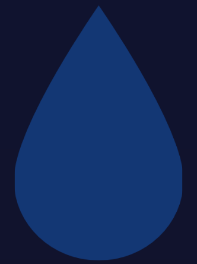

0
km/h
0
70k
Beers in My Cellar
Donut chart showing 10 total beers. Two beers are Imperial India Pale Ales, four beers are Belgian Quadrupels, and three are Russian Imperial Stouts. The last remaining beer is unlabeled.
Imperial India Pale Ales
Green chart segment spanning 20% of the whole, which is 2 Imperial India Pale Ales out of 10 total.
Russian Imperial Stouts
Blue chart segment spanning 3% of the whole, which is 3 Russian Imperial Stouts out of 10 total.

0
Beers in My Cellar
Donut chart showing 10 total beers. Two beers are Imperial India Pale Ales, four beers are Belgian Quadrupels, and three are Russian Imperial Stouts. The last remaining beer is unlabeled.
Imperial India Pale Ales
Green chart segment spanning 20% of the whole, which is 2 Imperial India Pale Ales out of 10 total.
Russian Imperial Stouts
Blue chart segment spanning 3% of the whole, which is 3 Russian Imperial Stouts out of 10 total.
51%
Apr
May
Jun
Jul
Aug
Sep